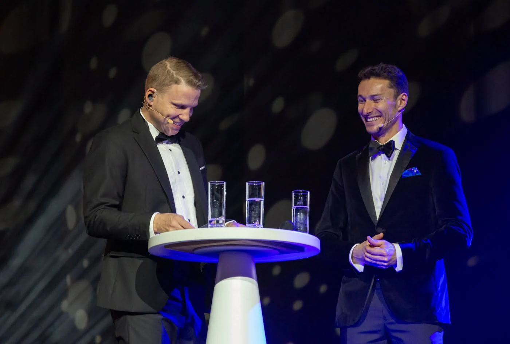

Veranstaltungsplanung / 5 Min.Ein gutes Briefing erklärt mehr als den Ablauf. Es vermittelt ein klares Bild von den Menschen, dem Ziel der Veranstaltung und dem Zusammenspiel der Sprachen.
Artikel lesen↗Bessere Gespräche / 4 Min.Ein Panel braucht mehr als interessante Menschen und eine Reihe Stühle. Es braucht eine Frage, die sich lohnt, und genügend Struktur, damit das Publikum folgen kann.
Artikel lesen↗Internationales Publikum / 4 Min.Die richtige Sprachwahl beginnt bei den Menschen: Wer soll teilnehmen, was müssen sie verstehen und wie möchtest du sie einbeziehen?
Artikel lesen↗